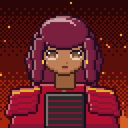
Oharu ♀
dona da casa de chá da praça
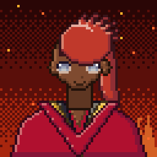
Daigomercador de relíquias falsas
Renji
juiz do coliseu, ex-campeão de um braço
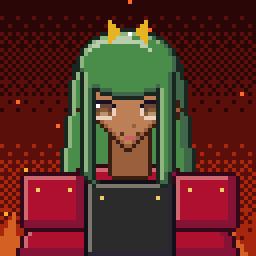
Homare ♀
duelista aposentada que treina novatas
Ibuki ♀
sargenta instrutora de Enjō
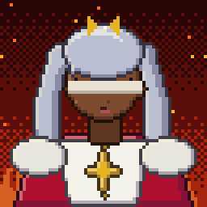
Sumi ♀
guardiã cega do santuário da fênix
Tsubaki ♀
armeira do quartel de Enjō
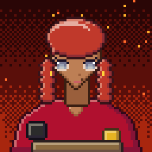
Tomoe ♀
ferreira de Haibara, mãe da criança sumi
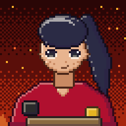
Kentamenino entregador, amigo da criança sumi
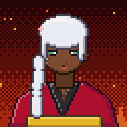
Anciã de Kagerō ♀
última anciã da vila-miragem
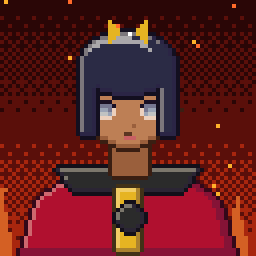
Akane ♀
curandeira aprendiz
O Barqueiro Mais Velho
barqueiro de pedra
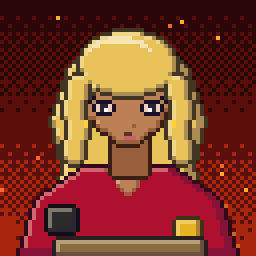
Kaede ♀
ferreira errante, filha do forjador Gōen
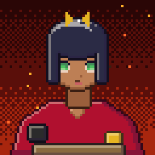
Nami ♀
barqueira de fronteira
O Escriba Queimado
fantasma de um escrivão da cidade
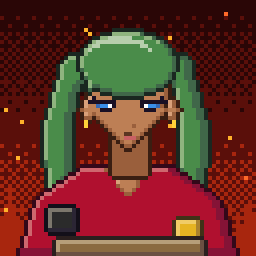
Mio ♀
caçadora de relíquias
Mestre Uo
velho peixeiro e ex-guarda do palácio
Shizu ♀
aprendiz de bibliotecária
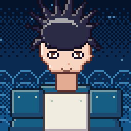
Capitão Gorōcapitão do porto
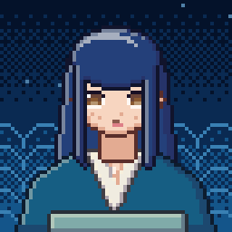
Rin ♀
menina que vende água-espelho
Vó Ume ♀
a pescadora mais velha de Amiya
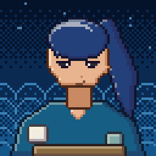
Tarōpescador jovem e medroso
Oboro
guardião da névoa de Kirigakure
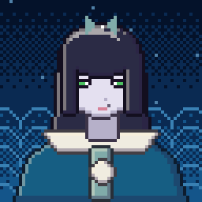
Kasumi ♀
aprendiz fugida da Bruxa-Mãe
Yuki ♀
caçadora de mamutes
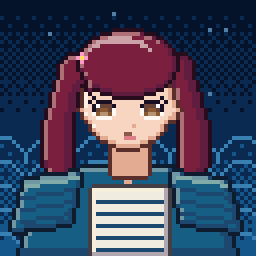
Fuyu ♀
curandeira do acampamento do gelo
Irmã Mizu ♀
sacerdotisa das águas
Akemi ♀
peregrina que procura o companheiro espi
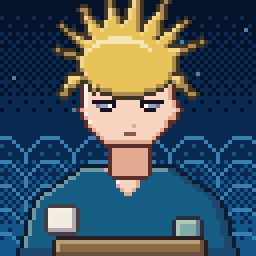
Kaito, o Mergulhadormergulhador veterano de um pulmão só
Nagisa ♀
mergulhadora de pérolas
Mestre Ganji
ferreiro-chefe de Kanayama
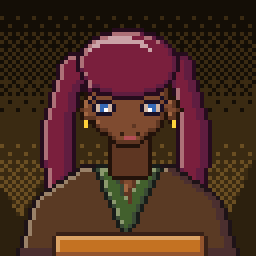
Kiku ♀
consertadora de golens
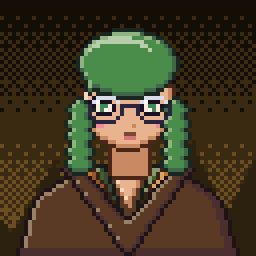
Koto ♀
guardiã do banco de cristais
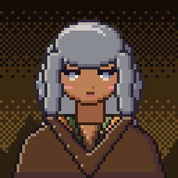
Avó Nara ♀
anciã de Kodama-mura
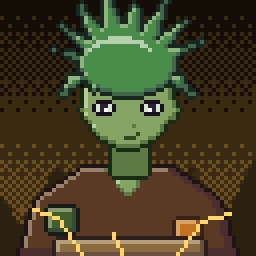
Pequeno Ecoum kodama curioso
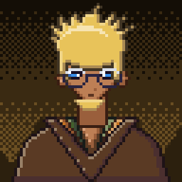
Shincontador do clã Kurogane
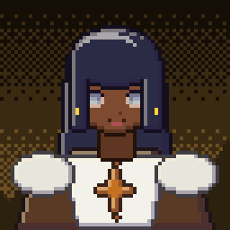
Hana ♀
mineradora que perdeu o irmão para os cr
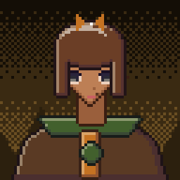
Professora Ine ♀
estudiosa de ossos de dragão
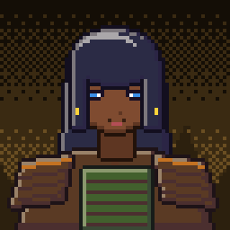
Tia Yone ♀
padeira de Mugibatake
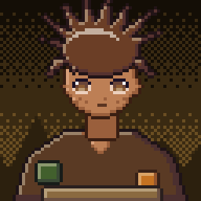
Sōtamenino pastor
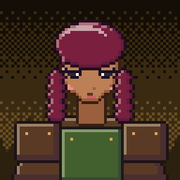
Capitã Tsuru ♀
capitã dos guardiões da muralha
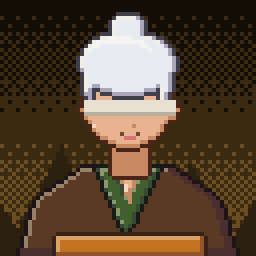
Mestra Tsuchi ♀
mestra cega dos Passos da Terra
Monge Jizō
monge que cuida das almas perdidas
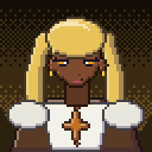
Shion ♀
sacerdotisa que acalma os mortos
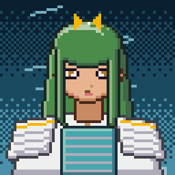
Suzu ♀
carteira-chefe de Kazamachi
Velho Kaze
ex-espião aposentado, vende pipas
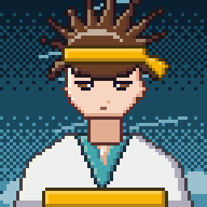
Hikotratador de grifos
Tsubame ♀
cavaleira-grifo
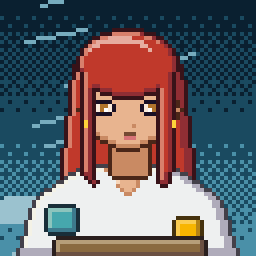
Börte ♀
líder dos pastores de Susukino
Ancião de Mayoi
guardião da vila do redemoinho
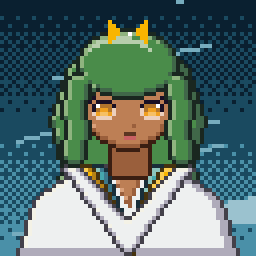
Dama Ito ♀
nobre entediada de Hagoromo
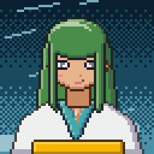
Sora ♀
piloto de nave de vento
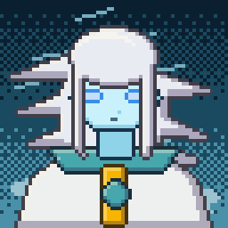
O Eco do Arquivouma voz que mora nas estantes
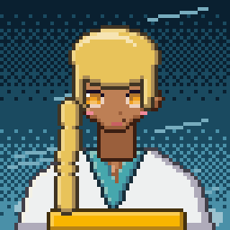
Oto ♀
dona surda da estalagem, lê lábios
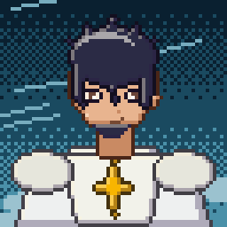
Raidenúltimo monge do templo
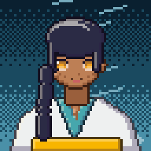
Kon ♀
menina que cria raposas-trovão
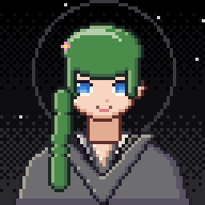
Mei ♀
recepcionista da Guilda
Mestre Yoru
Mestre da Guilda de Kyōkai
Utai
bardo cego do festival
Ran ♀
alquimista de rua e informante
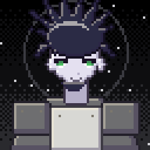
Tobio último vigia da muralha
Aoi ♀
curandeira dos vigias da muralha
Eco de Sayo ♀
a memória de uma menina de nove anos